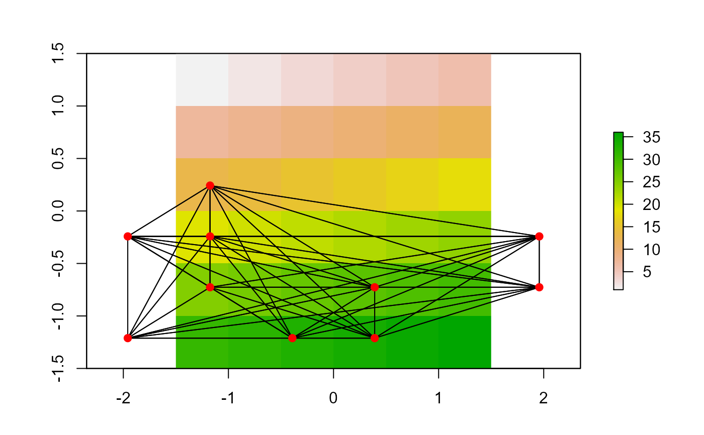

Calculates topographic corrected distance for a SpatialLinesDataFrame object
topo.distance(x, r, echo = FALSE)
| x | sp SpatialLinesDataFrame object |
|---|---|
| r | raster class elevation raster |
| echo | (FALSE/TRUE) print progress to screen |
Vector of corrected topographic distances same length as nrow(x)
This function corrects straight-line (euclidean) distances for topographic-slope effect.
Jeffrey S. Evans <jeffrey_evans@tnc.org>
# \donttest{ library(sp) library(raster) library(GeNetIt) # create example data data(elev) r <- projectRaster(elev, res=c(1000,1000), crs="+proj=aea +lat_1=29.5 +lat_2=42.5")#> Warning: CRS object has no comment#> Warning: CRS object has no comment#> Warning: Using PROJ not WKT2 strings#> Warning: Using PROJ not WKT2 strings#> Error in .local(x, y, ...): extents do not overlapnames(elev) <- "elev" pts <- sampleRandom(elev, 10, sp=TRUE) pts$ID <- LETTERS[seq( from = 1, to = nrow(pts) )] graph <- GeNetIt::knn.graph(pts, row.names=pts@data[,"ID"]) proj4string(graph) <- proj4string(elev)#> Warning: CRS object has comment, which is lost in output#> i j from_ID to_ID length #> 1 1 2 A B 1.500000 #> 2 1 3 A C 1.414214 #> 3 1 4 A D 0.500000 #> 4 1 5 A E 0.500000 #> 5 1 6 A F 1.802776 #> 6 1 7 A G 1.414214# Calculate topographical distance ( tdist <- topo.distance(graph, elev) )#> Warning: working under the assumption of projected data!#> Warning: Spatial object 1 is not projected; GEOS expects planar coordinates#> Warning: Spatial object 2 is not projected; GEOS expects planar coordinates#> Warning: Spatial object 1 is not projected; GEOS expects planar coordinates#> Warning: Spatial object 2 is not projected; GEOS expects planar coordinates#> Warning: working under the assumption of projected data!#> Warning: Spatial object 1 is not projected; GEOS expects planar coordinates#> Warning: Spatial object 2 is not projected; GEOS expects planar coordinates#> Warning: Spatial object 1 is not projected; GEOS expects planar coordinates#> Warning: Spatial object 2 is not projected; GEOS expects planar coordinates#> Warning: working under the assumption of projected data!#> Warning: Spatial object 1 is not projected; GEOS expects planar coordinates#> Error in x@coords[i, , drop = FALSE]: subscript out of bounds# Increase in corrected distance tdist - graph$length#> Error in eval(expr, envir, enclos): object 'tdist' not found# Percent increase in corrected distance ((tdist - graph$length) / graph$length) * 100#> Error in eval(expr, envir, enclos): object 'tdist' not found# }